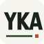
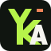

01 / WORDMARK
Sade ve net.
Üç harf tek satırda. Krem zemin, koyu harfler, yeşil çizgi ve turuncu nokta. En doğrudan okunabilen seçenek.
16 px32 px
Yusuf Kerim Altay — YKA
Yusuf Kerim Altay — YKA
Üç ayrı yön. Büyük görünümün yanında gerçek 16/32 piksel ve açık/koyu sekme örnekleri var. Bunlar yalnızca taslak; mevcut sitenin faviconu değiştirilmedi.

Üç harf tek satırda. Krem zemin, koyu harfler, yeşil çizgi ve turuncu nokta. En doğrudan okunabilen seçenek.

Y ve K ortak gövdede birleşiyor, A sağ altta tamamlıyor. Siyah zemin ve yeşil gövdeyle daha simgesel bir yön.
Y/K üstte, A altta. Yeşil zemin üzerinde yayıncılık hissi veren bir harf ızgarası; turuncu detay küçük bir imza gibi.